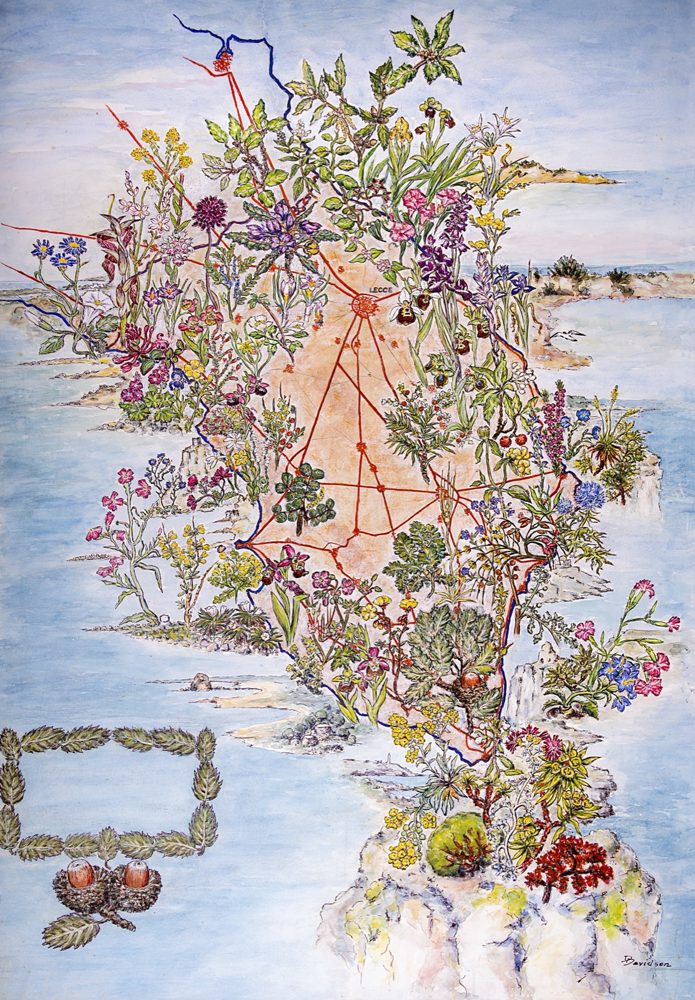
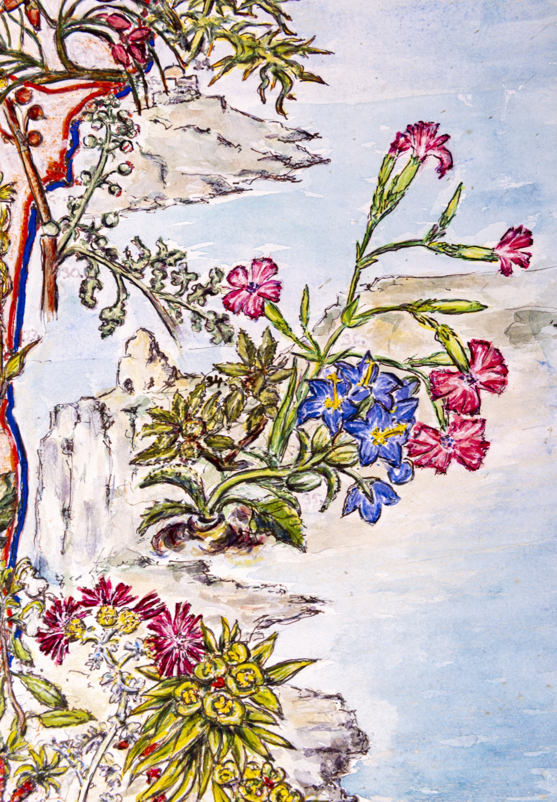
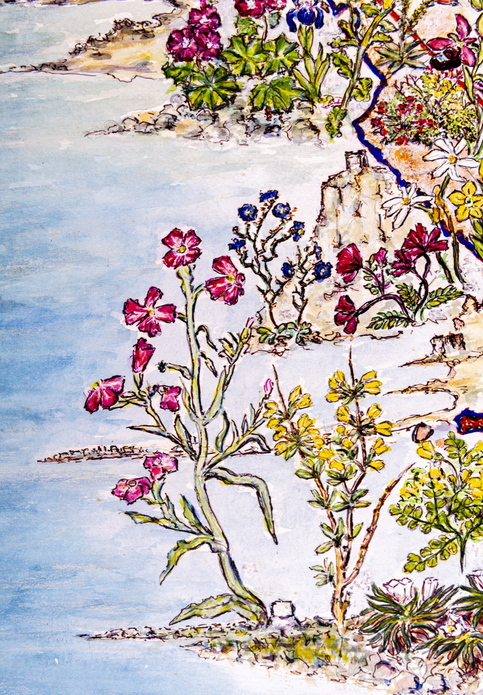
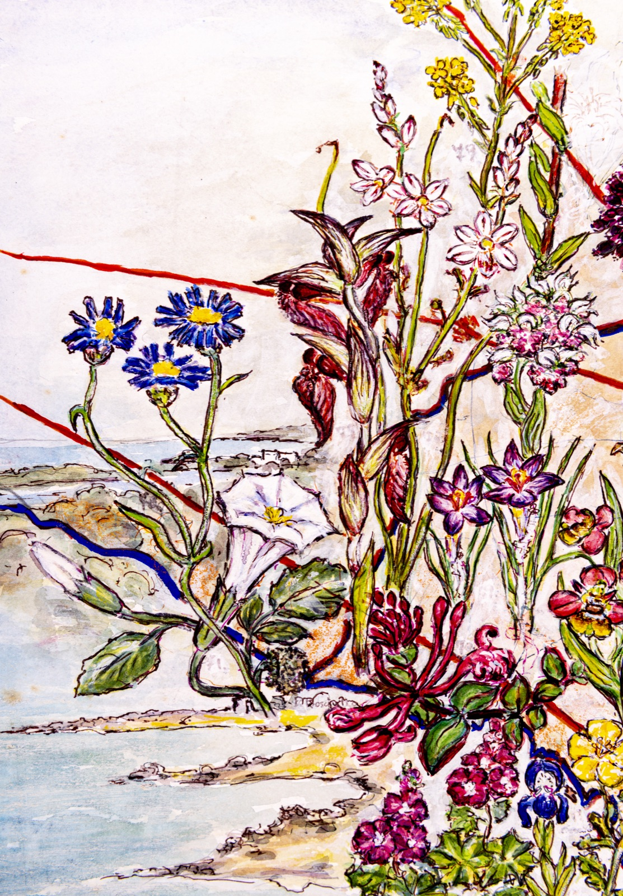
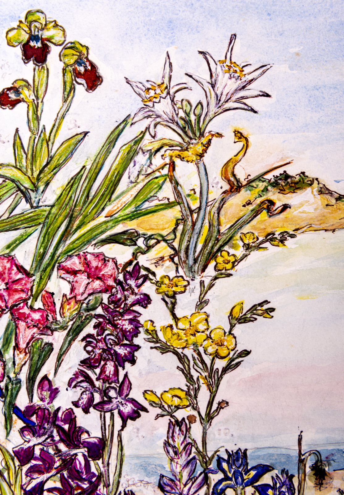
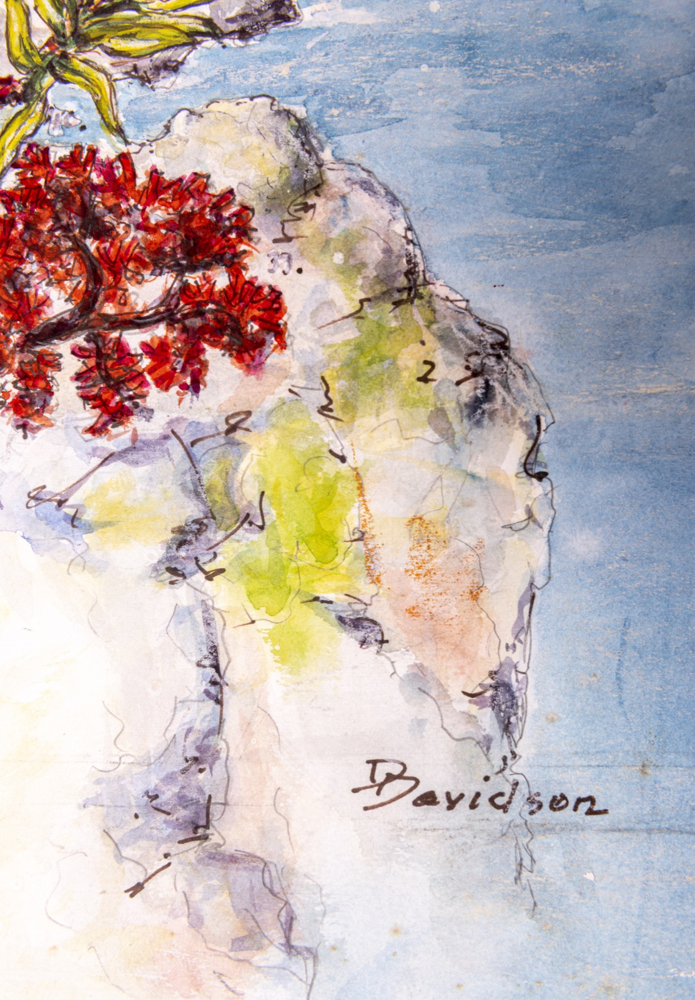

Mappa della flora del Salento
- Categoria
- Tavola botanica
- Fogli
- 6
Foglio 1 di 6

[mappa intera] Sulla mappa, accanto alla città: LECCE [dentro la cornice di foglie in basso a sinistra: testo cancellato] In basso a destra la firma: DDavidson [accanto alle piante ci sono piccoli numeri a matita, leggibili solo nei dettagli: vedi fogli 2–6]
Foglio 2 di 6

[dettaglio 1] Accanto alle piante, numeri a matita molto chiari: 30. · 33. · 35. · 36. In inchiostro: 34.
Foglio 3 di 6

[dettaglio 2] Accanto alle piante, numeri a matita molto chiari: 50. · 55 [?]
Foglio 4 di 6

[dettaglio 3] Accanto alle piante, numeri a matita molto chiari: 49 · 41.
Foglio 5 di 6

[dettaglio 4] Accanto alle piante, numero a matita molto chiaro: 10. [a margine, a sinistra: segni a matita, illeggibile]
Foglio 6 di 6

[dettaglio 5] Accanto alla pianta rossa, numero a matita: 33. In basso a destra la firma: DDavidson
Documentazione digitale
Documentazione e codifica dell'ITEM: